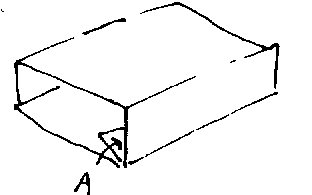
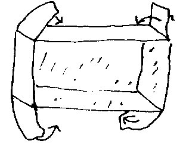

A harmless pastime devised by Frank Key
YOU WILL NEED:
Sharp scissors, a ruler, a blunt knife for scoring fold lines, and a suitable adhesive.
INSTRUCTIONS
1. Print out diagrams one and two on whatever thickness of card is suitable for your printer.
2. Cut out all the pieces along the solid lines. Be careful to include all the tabs on the smaller pieces.
3. Score along all the dotted lines using a ruler and a blunt knife. This makes it much easier to fold the pieces properly.
4. Make the outside of the house first. Fold the card as shown below, with the picture on the outside. Apply glue to the area marked A and stick firmly on the inside.

5. Then take the roof and fold along the three lines marked. Put glue on the areas marked B and C and stick firmly on top of the house. Make sure it's the right way up!
6. Now take the inside piece. Snip carefully along the solid lines into the picture as marked. Don't cut too far! Fold the card as shown below, with the picture on the inside. Apply glue to the blank tabs and stick firmly outside the box.

7. You will notice that there are lots of small free-standing pieces, too many for all of them to fit. Choose a few you like best and stick the tabs to the floor, walls, or ceiling of the house.
8. Slide the inner box into the outside and your customised House of Turps is complete!
{kind=link}
{kind=link}